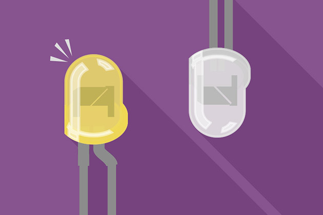
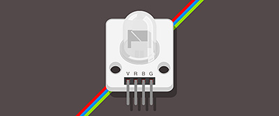
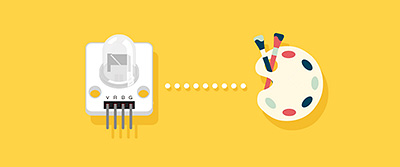
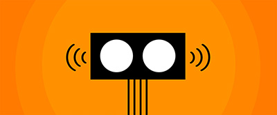
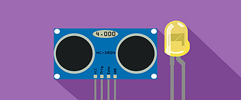
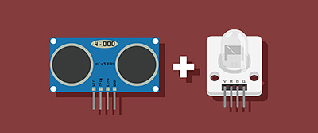
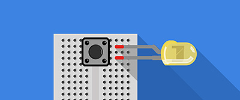

基礎介紹
基本介紹與初始化設定
April 20, 2015
常見問題處理
April 20, 2015
範例教學
單顆 LED 燈
April 20, 2015

兩顆 LED 燈交互閃爍
April 20, 2015

三色 LED 燈
April 21, 2015

三色 LED 燈調色盤
April 22, 2015

超音波傳感器
April 22, 2015
超音波傳感器改變圖片大小
April 25, 2015

超音波傳感器 + LED 燈
April 25, 2015

超音波傳感器 + 三色 LED 燈
April 25, 2015

不同裝置彼此連動 ( 按鈕 + LED )
April 25, 2015